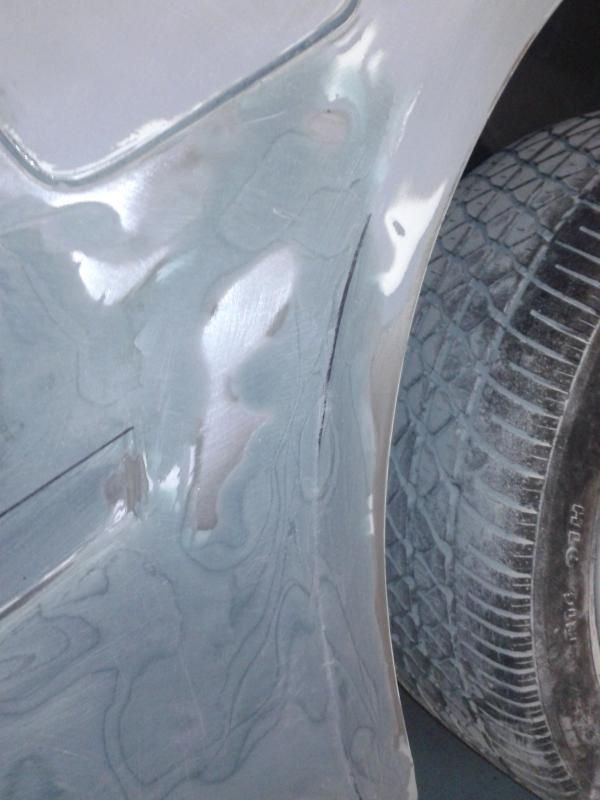

-
Hi guys, I really need some advice on a part of my Z that's rusted kinda badly. Also I'd love to know if this is a common place for rust on z31s. So I went to repair a small rust spot right behind the right back wheel, and it ended up being a big hole. It's rusted in the seam which is inside of the spare tire box area, so I can see sunlight from inside of where the spare tire is located. I was just wondering if this is 1 a common rust spot 2 if there is supposed to be a seam there, because when I was sanding down the rust there was a ton of bondo in that area and I know my car has a rebuilt title, so I'm still trying to figure out why the car got repainted and where the damage was on my car. ( I feel like an idiot for not being able to figure it out.) Anyways, so its a oval shaped hole and the rust has even cracked the metal on the lip of the rear wheel well. I don't want to try covering this up with bondo because that won't totally fix the problem, and I want to do this right, even if I have to mess up and learn how to do it. I was thinking about learning how to tig weld with a welder at my school, but I'm not finding any good how to's online, so I'm stuck. Does anyone know of any good tips/ how to tig weld for dummies? Or if tig welding is not the best approach? please help out a noob, don't want to rust out my car over the winter! -
Dunno if you're on mobile but that's difficult to read allinoneparagraph.
Common, very common. Since the dawn of the early Z car, rust has always been a persistent issue, and i've owned a Vega.Hi guys, I really need some advice on a part of my Z that's rusted kinda badly. Also I'd love to know if this is a common place for rust on z31s.
So I went to repair a small rust spot right behind the right back wheel, and it ended up being a big hole.
It's rusted in the seam which is inside of the spare tire box area, so I can see sunlight from inside of where the spare tire is located.
I was just wondering if this is
1 a common rust spot
2 if there is supposed to be a seam there, because when I was sanding down the rust there was a ton of bondo in that area and I know my car has a rebuilt title, so I'm still trying to figure out why the car got repainted and where the damage was on my car. ( I feel like an idiot for not being able to figure it out.)
Anyways, so its a oval shaped hole and the rust has even cracked the metal on the lip of the rear wheel well. I don't want to try covering this up with bondo because that won't totally fix the problem, and I want to do this right, even if I have to mess up and learn how to do it.
I was thinking about learning how to tig weld with a welder at my school, but I'm not finding any good how to's online, so I'm stuck.
Does anyone know of any good tips/ how to tig weld for dummies? Or if tig welding is not the best approach? please help out a noob, don't want to rust out my car over the winter!
If they salt the roads in your area i've heard it'll swiss cheese your car.
Also interior waterleaks are common to Z31's and they can just as well rust from
the inside out if you have leaky tailights, side windows, T-top seals and drains…etc…
Personally, i'd attempt welding in a patch to replace as much rotted metal as you can, and go easy
on the filler if possible. Filler, if not sealed properly can hold moisture and create more rust.
Welding is a good option for patching and from what i've been studying (as i have a rusty AE myself)
GMAW (shielded gas MIG) welding is the best approach. You can use TIG, but the bulk of repairs i've seen are MIG.
Some of the build threads here have some rust- repair work that you can follow, but you have to search for it.
Personally, i've watched almost every youtube video i can about autobody welding and rust repair. Most of it
is US domestic but the technique and info still applies.
84 AE/Shiro #683/Shiro #820/84 Turbo -
cut it out and replace. Alternatively, slather it with rustproofing. However, it is still "there"
I had rust spots in the bottom driver's side area you're talking about from a leaky antenna gasket. I just cut the area out and am welding a piece of metal in. I'm going to add a plug to drain water than may end up there. -
My belief is that fiberglass filler is waterproof. Cut out rust, shape your patch and weld it in. Filler is not a bad thing if you know how to use it. I like to use Everglass by Evercoat. Why do a lot of people call filler, Bondo?

86T… my bodywork guinea pig.Cha iro
enjoy building it yourself.
if it fails, fuck it.
at least you gave it a whirl. -
Bondo is a name brand of a type of filler that is/was widely used.
Similar to why people call it a Crescent wrench when it's actually just an adjustable wrench.
The Crescent tool company just manufactured them.
As a term, "bondo" is synonymous with "patch job" because of the bad reputation of DIY'ers
using it improperly or to just hide damage.
84 AE/Shiro #683/Shiro #820/84 Turbo -
Weld in a patch is the best option. If it isn't an option, then fiberglass. Bondo for panel repair is a big no-no, use it to smooth out small imperfections you can't hammer out, or your high build primer couldn't fill.
Welding in a patch doesn't really require THAT skilled a welder. You just need to weld into the gap between the panel and the patch, then grind the weld flat.Feedback- viewtopic.php?f=18&t=19840

-
On second thought, here. There's several good videos that might help you out.
http://www.roadkillcustoms.com/Hot-R…at=Body%20WorkFeedback- viewtopic.php?f=18&t=19840

Copyright © 2006–. All rights reserved. Privacy Policy